Engine Out, Then Back In

I won't waste your time with details of the engine pull/machining/rebuild. It was typical, no surprises. Burned valves, blah, blah, blah.
Our focus is the body, not the motor. This page covers the details of our noise/rust/heat study related to the motor and motor box. Again, forgive any slow load, long scroll.

Initial Conditions
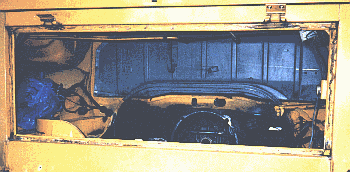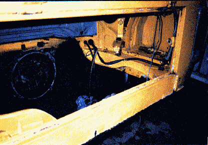
Whether you have a Bus or other VW, look at your motor box. Only pathetic wisps of soundproofing insulation on the top surface. The rest is bare metal, which catches all the pulses and clatter from the motor, transferring that cacophony to the rest of the body. When you close your motor compartment cover (or any door on your van), it sounds like a trash can lid. No damping or insulation. Ugh.
On top of all that, the Type II is not exactly a silky quiet motor. In 1970, when Porsche put the Type IV (a close cousin to the Type II) in the 914, the automotive press said the motor "made an abysmal racket" and "sounded like a sheet-metal stamping factory inches from my back". Agreed. VW didn't think it was bad enough to put much effort into containing that noise. We did though.
Notice the complete lack of thermal insulation to keep excess heat in the motor area, and not in the van.
Finally, notice the lack of protectant/undercoating in the cooling air intake/battery compartment. This area is bathed in rain, and sometimes, battery acid. VW thought that paint would protect the body in this environment, and many former bus owners (who now own a VW-brand chicken coop, storage shed, etc) can testify to how wrong VW was. In our case, the battery area was free of rust and simply needed cleaning.

Preparation
We carefully stripped out all seats, panels, mats and everything else from the interior. I do not mean just certain everythings, I mean EVERYTHING. Even the crummy rubber matting under the front seats and the ridiculous "noise insulation" back on the sides of the rear cargo area. We taped off the dash and sealed it in plastic, and did the same to the steering wheel center (horn, turn signals, etc.)
 We then power washed/steam cleaned the entire body
inside and out, top to bottom, every crack, every crevice, to
remove all traces of grease and grime. The motor was also steam
cleaned, even though it was coming out the next day. No sense in
getting grimy while pulling a motor, right?
We then power washed/steam cleaned the entire body
inside and out, top to bottom, every crack, every crevice, to
remove all traces of grease and grime. The motor was also steam
cleaned, even though it was coming out the next day. No sense in
getting grimy while pulling a motor, right?
I cannot recommend this washing highly enough as you start this project. It beats the heck out of cleaning each area with 409 before installing the insulation/noise proofing/plastic, or whatever.

NASA Insulation
Now lets look at what we added:
In this somewhat gloomy photograph, we see the components mounted on the firewall have been removed, insulation installed, and the components reinstalled, carefully cutting away the insulation where need be. The roll you see in the rear cargo area is a remnant of the insulation used. It is sold by J.C. Whitney & Co, under the name "Heat and Noise insulation used by NASA". About $20.
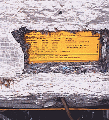
Here we see two layers of this insulation on the motor box cover. It is a flame proof felt pad about 1/3" thick with two layers of aluminum facing and a fiberglass mesh for rigidity. Goes on easy. Use: industrial spray adhesive, scissors, and two dashes of common sense. Certain components on the top surface were used to "hang" the insulation while the adhesive cured, and two screws with 2" washers were installed into the cross-body member to insure a solid fit. This same product is used throughout the van (we used four rolls) and I will refer to it as "NASA insulation".

Polyurethane Foam Filler for Voids
I cannot emphasize enough the importance of this step. If you skip this, you are missing a good quarter of the noiseproofing and heat retention, as well as some great measure of rustproofing as well.
All of the "voids" throughout the body naturely resonate with any sound/vibration introduced to them. You know how this works...you've seen on the X-Files where Agent Muldore is running through sewer piping, being chased by a mangle-faced, inbred alien, when he screams out "SCULLY!!!!"...it echos for miles do Agent Scully, who is smoking a cigarette up on the surface...The point? Tubes and cavities resonate near-perfectly.Further, these are the same areas where condensation and moisture can cause needles corrosion, and heat can leak out freely.
THEREFORE, all of the "cavities" thoughout the entire body are filled with polyurethane expansion foam filler. You can buy this under the product name "Great Stuff" for about $7 a can. This is one of Lexus and Infinity's little tricks toward making a very solid body.
When I say a cavity or void, I mean a hollow area that can trap and resonate sound. For example, there is a void that runs around the entire periphery on the motor box cover, see below. Notice the foam in the void next to the lock. but they are EVERYWHERE on the body. Around the tops of all the doors, around the bottom of the sliding door, and the rear hatch, even in front of the front floorboad, below the headlamp buckets. FILL THEM.
|
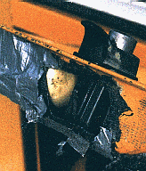 |
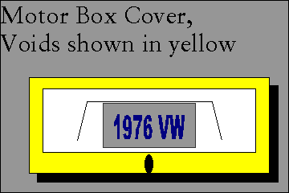 |
This stuff really deadens resonance, a big difference when you close a door. Infinity and Lexus use this in ALL the voids. They also claim it "stiffens the body". I dunno about that, but on your VW you notice no more trash can lid sound. Rule of thumb on your van, if it isn't there to drain water, FILL IT with this stuff.
It also is a good filler/caulking. For example, we used it to fill the gap between the rear wheel arch and the outside body panel (bottom of the cooling air intake area, (below the spare tire well). Notice that V-shaped gap? Many buses begin their rusty trip toward becoming a chicken coop right there. Prevent it. Clean it, and caulk it. Three VERY
important caveats, though:
First, think twice about what you fill with polyurethane expansion foam. Certain areas of the body are designed to drain water, for example, the bottom of the front doors. Fill these and you will grant yourself endless moist days, and rusty doors. There are plenty of spots where this stuff can cause water to collect. Beware.
B), this stuff is unfathomably sticky, and quite durable. If your appearance or health is of any concern, wear gloves, a long sleeve shirt, goggles, and a hat. Also, if you have neighbors or children nearby, wear trousers.
III-, the instructions say "only fill areas 1/3rd full." This is not idle chatter. This product will miraculously expand for hours as it cures, like Mt. St. Helens, pushing big sticky globs of foam into places where you do not want it to be. Once it is cured (24-48) you can cut it with a razor blade and make little sculptures of the hardened blobs. It took four cans for our project, not counting blob sculptures.

Zero Balancing and Counter Weighted Cranks
If you truly want a silent bus and you are having the motor rebuilt, you can take a couple of extra steps at moderate cost for dramatic results.
If money is no object, purchase a counterweighted crankshaft for the motor. This will probably run between $400-$700 (a guess). The crankshaft is the main rotating mass inside the motor and by nature, the Type II crankshaft creates low-frequency vibration as it spins. A counter-weighted crankshaft eliminates this vibration by welding/machining large weights to the side of the crank opposite the connecting rod journals. Modern motors (including all VW's now) have counterweighted cranks.
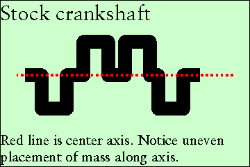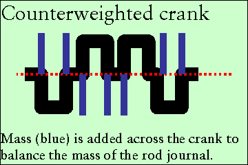
If money is somewhat of an object, use your stock crankshaft, but have it "Zero Balanced". Zero Balancing means machining off exact amounts of metal to make all of the reciprocating/rotating parts identical in weight across and along the axis of the crankshaft. In plain English, it's like having your tires balanced, except we are talking about all of the heavy, spinning stuff in your motor.
Have the same done for the connecting rods (including end to end), pistons, flywheel and pressure plate and don�t forget your cooling fan. Beyond your regular machining, this may add $300. It is worth EVERY penny. Your motor will sound like a sewing machine when you are done.

Hot Stuff-Exhaust Wrapping
This actually is a critical part of our heater effort, but was done while the motor is out, so it lands here.
Exhaust wrapping is fiberglass-mesh webbing, approximately 3 millimeters thick, and about 6 centimeters wide. It is applied by moistening the mesh, then wrapping the exhaust spiral fashion. The webbing hardens into a chrysalis around the pipes.
Its purpose is twofold. First, to insulate the exhaust tubing so the waste gasses do not cool immediately after leaving the heads, thus maintaining their velocity. This is important. If the exhaust cools suddenly on leaving the heads, it slows down, making the motor work harder to push it out the exahust tubing, muffler, and tailpipe. Don't forget, it is the force of your piston that has to do the job of pushing that exhaust out, wasting horsepower.
Second, the insulation prevents the glowing HOT exhaust tubes from radiating tremendous heat (infrared) to the heads. we forget about this IR heat sometimes, but if you turn your motor off after a hard run ahd put your hand near your bare exhaust, you will feel the tremendous toasting action. All of this IR would normally bake the lower portion of the heads as they are trying to stay cool. Counter productive.
Finally, you want the exhaust to stay hot for another reason though: namely more available heat in your heat exchangers. As an added benefit you get cleaner emissions. The emissions decrease is due to the hotter temperatures "afterburning" unburned exhaust/fuel products. VW's afterburner pipe was for this reason, but the original insulation never lasts more than a few years. This product more than adaquately replaces that afterburning effect. Most importantly, though, all of that heat is now available for release INSIDE your heat exchanger, driving the heated-air temperatures through the roof.
The product works so well you can grab your exhaust system with an ungloved hand even straight away after highway travel. This serves no real purpose, and is not even handy enough to be an entertaining party gag, but it is interesting nonetheless. The total increase in temperatures in our heat exchangers would be hard to codify but our heat works better than many water-cooled vehicles, and I know this product was key to acheiving this.
I seem to recall the name of the product is "RaceTec" or "J-tech". You can find it at Hot Rod shops for about $35 a roll. They will look at you as if you are crazy when you tell them you want it for your VW Bus. Tell them you ARE crazy, and to sell you a roll or else you'll drink Brake Fluid. They'll sell it to you.
While we are talking about the picture below, note the new heat exchangers. If yours are rusty or full of holes, get new ones. It's about $600 for the pair and well worth it.
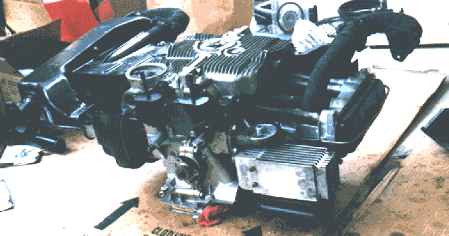
You can barely make it out in this photograph, wrapped around the exhaust extractors and afterburner "J-tubes". This was during the rebuild, a time when I did not mind seeing the motor upside down behind the van. Today, this occurrence would be sad. Of course it's not my bus now, and if Jamie (New Owner) wants to flip the motor, or grab the exhaust, that's his prerogative.
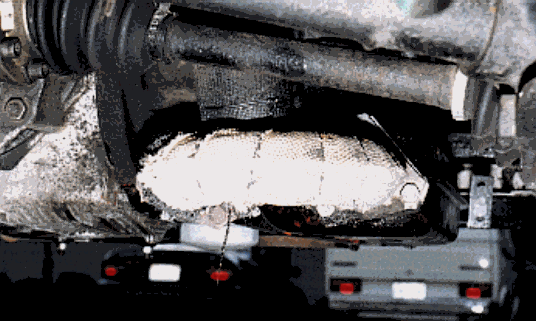
Here is another shot, of the exhaust J-tube just before selling the van. Much of the protective paint has washed off the fiberglass wrapping and needs to be renewed, but you can get a clearer picture of the fiberglass webbing, and of the wrapping on the heat riser tube. (Note our new Westfalia in the background). Note the blob of JB Weld sealing the EGR pipe. J Also note, I do not use the regular VW oil filter, but a PH8A instead. Somewill argue not using VW filters, and they maybe right, but I always have used the larger filter since my 914 days (Pres. Reagan years). PH8A gives about double the filtering capacity, and only hangs a bit lower. Note the very-tip of a green hose at the upper right of the photo, that is the "self-draining" line for our 94-quart cooler. Wow, there's just all sorts of stuff to Note in this photo.

Final Preparations
We sealed all of the joints in the heating/tinware with High-temperature silicone sealant. Many of the gaps were a few millimeters wide. Across the entire motor, it added up to a lot of leaking air. If you look closely at the photographs below, you will note orange gook oozing around all of the flanges/tinware. We applied it before assembly then tightened the parts down, and wiped off the excess.
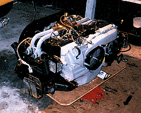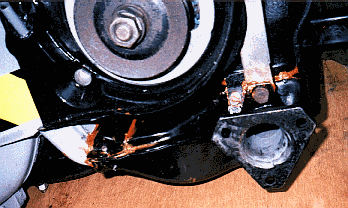
Okay, I know that all this is kind of Anal Retentive, but this was my lovely wife's bus, and I wanted the absolute best for her. If she were your mate, you would feel as inspired.
It goes without saying, we replaced the foam seal that surrounds the motor. For those who are new in town, that spongy foam seal is a critical component of the cooling system. It prevents the very hot air from under the motor from being sucked into the cooling fan. All of your cooling air must come from the scoops (ears) on the back of your van, or you risk overheating.
Next stop, Interior out, Noise Proofing.

Interior Out, Noise Proofing | Heater Design, Install | Home

Could our business help yours? Find out how, here: http://www.bulley-hewlett.com/
Write us at: mailto:gmbulley@bulley-hewlett.com

{kind=link}
{kind=link}